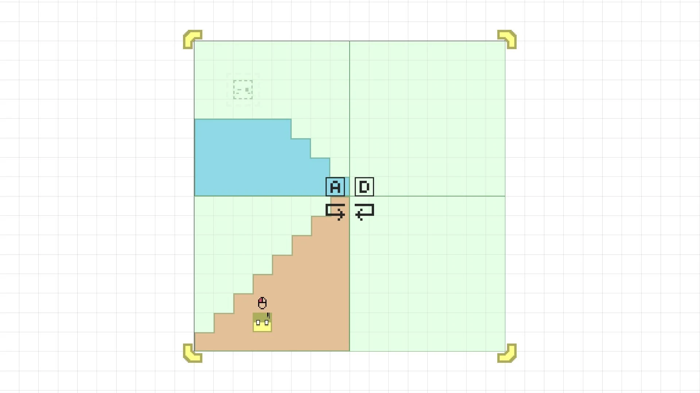
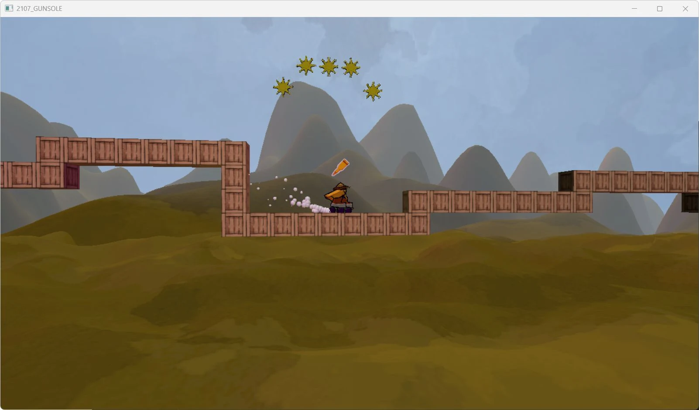
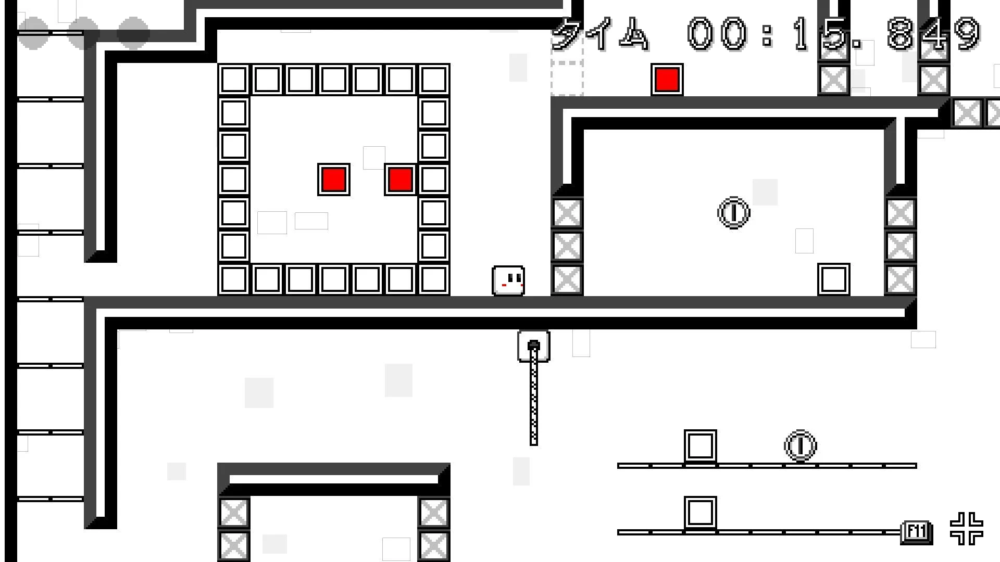

3年次 / 個人制作
3D横スクロール
アクション
キーボード
多くのライトで空間を演出し、細かなアニメーションで「見ていて面白い、楽しいゲーム」を目指した作品です。プレイヤーの変身機能やステージギミックと並行して、制作に必要なエンジンとエディターも開発しています。
- 制作形態
- 個人制作
- 開発期間
- 3か月・開発中（資料時点）
- 取り組み
- ゲーム / 自作エンジン / エディター
GAME PROGRAMMER / PORTFOLIO
すずき いおん / Ion Suzuki
ゲームプログラマー
プレイヤーの挙動から、画面の演出、制作を支えるエディターまで。
ゲームと自作エンジンの両面から、面白い体験を形にしています。
ACHIEVEMENTS
実績は提供された8月月次資料に基づきます。
01 / SELECTED WORKS
個人制作とチーム制作。
それぞれの作品で取り組んだこと。
3年次 / 個人制作
多くのライトで空間を演出し、細かなアニメーションで「見ていて面白い、楽しいゲーム」を目指した作品です。プレイヤーの変身機能やステージギミックと並行して、制作に必要なエンジンとエディターも開発しています。

1年次 / 3人チーム / 2か月
2D横スクロールパズルアクション
インゲームの全プログラムと、チームのステージ制作を支える専用エディターを担当。回転アニメーションによる方向の伝達や、最後に着地した際のステージ形状を復元する復活処理を実装しました。
配布ページで見る（新しいタブ）作品の詳細を見る



2年次 / 3人チーム / 1か月
3Dアクション / DirectX 12
プレイヤーの挙動、カメラ制御と演出、ボス登場時の演出を担当。ボス戦らしい見せ方とカメラワークを意識して制作しました。
作品の詳細を見る
全作品でキーボード操作ができます。マウス併用の作品は、キーボード操作時にマウスも使用します。●：対応 ／ —：対応する操作として掲載なし
| 作品 | キーボード | マウス併用 | Xboxコントローラー |
|---|---|---|---|
| 3D横スクロールアクション | 対応 | 対応記載なし | 対応記載なし |
| くるくるレイヤー | 対応 | 対応 | 対応 |
| グランナー | 対応 | 対応記載なし | 対応 |
| CLUBOM | 対応 | 対応記載なし | 対応 |
| Gun Sole | 対応 | 対応記載なし | 対応 |
| 大氷怪鳥 ジー・クアイス | 対応 | 対応 | 対応 |
| モノクション | 対応 | 対応記載なし | 対応記載なし |
| カケダマ | 対応 | 対応記載なし | 対応記載なし |
| 鉱石洞窟 | 対応 | 対応 | 対応記載なし |
コントローラーの表記は、すべてXboxコントローラーを指します。具体的な操作は各作品ページ・配布ZIPの説明をご確認ください。
02 / KASHIPAN ENGINE
作品とともに育てる
自作エンジンと制作環境。

C++ / DirectX 12を基盤にしたWindows向けの自作エンジン。コンポーネント、シーンエディター、AngelScriptを組み合わせ、ゲームの挙動と制作環境を構築しています。
エンジンの紹介を見る就活作品のプログラム説明を読む03 / ABOUT
すずき いおん / Ion Suzuki
アプリケーションプログラマー。
ゲーム、イラスト、プログラミングが好きです。
ゲーム内の挙動やカメラ演出だけでなく、チームが制作しやすい環境づくりにも取り組んできました。自作エンジンでは、描画・ツール・スクリプトをつなぎ、作品に必要な機能を実装しています。
04 / DOCUMENTS
作品の紹介と、実装・検証の詳細をPDFでまとめています。